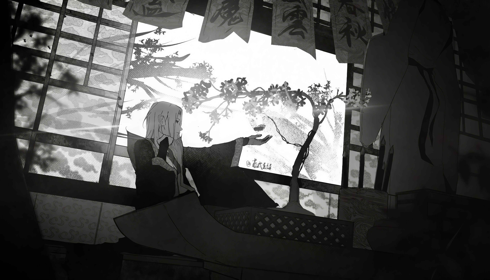
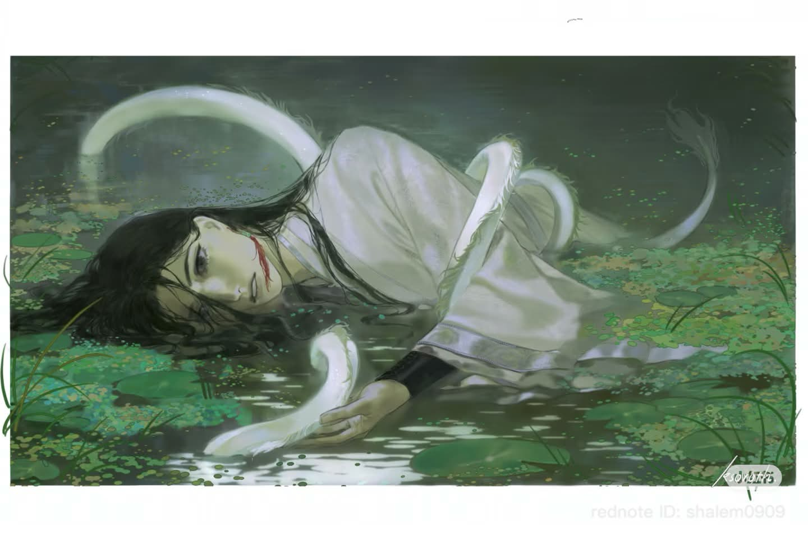

The Reverend Insanity encyclopedia curated by The Omniarch
Featured

The time-rebirth Gu refined at terrible cost and staked on one last gamble by Fang Yuan, ender of his five-hundred-year demonic reign.
Art: noazari571 · community archive
Curator of the translation, host of the Discord, peak-fiction voice on YouTube and TikTok — a fan who built the story a home.
Brand seal · theomniarch.com.ng
Say not that mighty mountains stand unyielding as iron;
Today, I stride forward and cross them anew.
Facing peril, I fashion my body from the essence of Heaven and Earth;
My heart, as ever, gazes at the Heavens.
10 October
Today’s date at the translation bench: Chapter 9 typesetting · 8 of 2,334 chapters typeset

On Earth
Chapter 8 typeset — Chapter 9 at the bench
Art: nons3nse · community archive
On Earth
- 2012 - Gu Zhen Ren begins serialising Reverend Insanity (蛊真人), the tale of a transmigrator continuously reborn through time.
- 2019 - The original novel enters hiatus at chapter 2,334; Volume 1 Demonic Nature Never Changes (魔性不改) remains the way in.
- Now - The Omniarch re-translation typesets the opening volume; Chapter 8 is live and Chapter 9 sits at the bench.
In the Gu World
- The end of the first life:
- Cornered on the mountaintop by the united Righteous Path, Fang Yuan clutches his freshly refined Spring Autumn Cicada and detonates himself rather than yield it.
- Five hundred years — three hundred of wandering, two hundred of unbridled dominion — collapse into a single heartbeat.
- Rebirth:
- Time reverses; the demon awakens again in his fifteen-year-old body on the eve of the Aperture Opening Ceremony.
- Spring rain falls on Qing Mao Mountain, and the stilt-house lights of Gu Yue Village glow as the clan prays for new genius blood.
The encyclopedia needs your lore!
This encyclopedia carries only the story of The Omniarch Translation. Its containers stand complete — its imagery awaits the keeper’s hand. Begin with the story itself.
Discover the Reverend Insanity Encyclopedia
8 chapters typeset of 2,334 · 44 parables of Ren Zu in the companion scripture · curated by The Omniarch
A to Z
Works
Reverend Insanity (2012– ) · Author’s Preface: Either Towards Success or Towards Destruction · Volume 1 Demonic Nature Never Changes (魔性不改) · The Legends of Ren Zu — 44 mythic parables
Cultivation
Gu Masters (the nine ranks) · Aperture Opening Ceremony · Aperture · Aptitude grades · Refining · Nurturing · Using · Primeval essence
Volume 1 Chapters
…
Clans & Factions
Gu Yue Clan · Bai Clan · Xiong Clan · Righteous Path · Demonic Path · Hidden inheritances
Characters
Fang Yuan · Fang Zheng · Shen Cui · Gu Yue Clan Leader · Gu Yue elder · Gu Yue Qing Shu · Bai Ning Bing · Flower Wine Monk · Ren Zu (more)
Locations
Qing Mao Mountain · Gu Yue Village · Bai Village · Xiong Village · Five Regions · Immemorial Nine Heavens (list of all)
Gu
Spring Autumn Cicada · Moonlight Gu · Liquor Worm · One Qi Golden Light Worm · Black Hair Gu · Hope Gu (more)
The Legends of Ren Zu
Ren Zu · Hope Gu · The Ancestral Path · 44 mythic parables · Daoist philosophical codex
Other
Philosophy & glossary · Genres (xianxia · dark fantasy · psychological) · Translation notes · Timeline · Community channels
[ settings ]